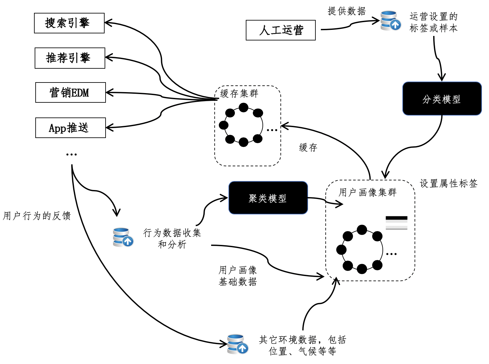

- 01 二进制：不了解计算机的源头，你学什么编程.md.html
- 02 余数：原来取余操作本身就是个哈希函数.md.html
- 03 迭代法：不用编程语言的自带函数，你会如何计算平方根？.md.html
- 04 数学归纳法：如何用数学归纳提升代码的运行效率？.md.html
- 05 递归（上）：泛化数学归纳，如何将复杂问题简单化？.md.html
- 06 递归（下）：分而治之，从归并排序到MapReduce.md.html
- 07 排列：如何让计算机学会“田忌赛马”？.md.html
- 08 组合：如何让计算机安排世界杯的赛程？.md.html
- 09 动态规划（上）：如何实现基于编辑距离的查询推荐？.md.html
- 10 动态规划（下）：如何求得状态转移方程并进行编程实现？.md.html
- 11 树的深度优先搜索（上）：如何才能高效率地查字典？.md.html
- 12 树的深度优先搜索（下）：如何才能高效率地查字典？.md.html
- 13 树的广度优先搜索（上）：人际关系的六度理论是真的吗？.md.html
- 14 树的广度优先搜索（下）：为什么双向广度优先搜索的效率更高？.md.html
- 15 从树到图：如何让计算机学会看地图？.md.html
- 16 时间和空间复杂度（上）：优化性能是否只是“纸上谈兵”？.md.html
- 17 时间和空间复杂度（下）：如何使用六个法则进行复杂度分析？.md.html
- 18 总结课：数据结构、编程语句和基础算法体现了哪些数学思想？.md.html
- 19 概率和统计：编程为什么需要概率和统计？.md.html
- 20 概率基础（上）：一篇文章帮你理解随机变量、概率分布和期望值.md.html
- 21 概率基础（下）：联合概率、条件概率和贝叶斯法则，这些概率公式究竟能做什么？.md.html
- 22 朴素贝叶斯：如何让计算机学会自动分类？.md.html
- 23 文本分类：如何区分特定类型的新闻？.md.html
- 24 语言模型：如何使用链式法则和马尔科夫假设简化概率模型？.md.html
- 25 马尔科夫模型：从PageRank到语音识别，背后是什么模型在支撑？.md.html
- 26 信息熵：如何通过几个问题，测出你对应的武侠人物？.md.html
- 27 决策树：信息增益、增益比率和基尼指数的运用.md.html
- 28 熵、信息增益和卡方：如何寻找关键特征？.md.html
- 29 归一化和标准化：各种特征如何综合才是最合理的？.md.html
- 30 统计意义（上）：如何通过显著性检验，判断你的A_B测试结果是不是巧合？.md.html
- 31 统计意义（下）：如何通过显著性检验，判断你的A_B测试结果是不是巧合？.md.html
- 32 概率统计篇答疑和总结：为什么会有欠拟合和过拟合？.md.html
- 33 线性代数：线性代数到底都讲了些什么？.md.html
- 34 向量空间模型：如何让计算机理解现实事物之间的关系？.md.html
- 35 文本检索：如何让计算机处理自然语言？.md.html
- 36 文本聚类：如何过滤冗余的新闻？.md.html
- 37 矩阵（上）：如何使用矩阵操作进行PageRank计算？.md.html
- 38 矩阵（下）：如何使用矩阵操作进行协同过滤推荐？.md.html
- 39 线性回归（上）：如何使用高斯消元求解线性方程组？.md.html
- 40 线性回归（中）：如何使用最小二乘法进行直线拟合？.md.html
- 41 线性回归（下）：如何使用最小二乘法进行效果验证？.md.html
- 42 PCA主成分分析（上）：如何利用协方差矩阵来降维？.md.html
- 43 PCA主成分分析（下）：为什么要计算协方差矩阵的特征值和特征向量？.md.html
- 44 奇异值分解：如何挖掘潜在的语义关系？.md.html
- 45 线性代数篇答疑和总结：矩阵乘法的几何意义是什么？.md.html
- 46 缓存系统：如何通过哈希表和队列实现高效访问？.md.html
- 47 搜索引擎（上）：如何通过倒排索引和向量空间模型，打造一个简单的搜索引擎？.md.html
- 48 搜索引擎（下）：如何通过查询的分类，让电商平台的搜索结果更相关？.md.html
- 49 推荐系统（上）：如何实现基于相似度的协同过滤？.md.html
- 50 推荐系统（下）：如何通过SVD分析用户和物品的矩阵？.md.html
- 51 综合应用篇答疑和总结：如何进行个性化用户画像的设计？.md.html
- 导读：程序员应该怎么学数学？.md.html
- 开篇词 作为程序员，为什么你应该学好数学？.md.html
- 数学专栏课外加餐（一） 我们为什么需要反码和补码？.md.html
- 数学专栏课外加餐（三）：程序员需要读哪些数学书？.md.html
- 数学专栏课外加餐（二） 位操作的三个应用实例.md.html
- 结束语 从数学到编程，本身就是一个很长的链条.md.html
- 捐赠
51 综合应用篇答疑和总结：如何进行个性化用户画像的设计？
你好，我是黄申。今天是综合应用篇的答疑和总结。
在这个模块中，我们讲述了不同数学思想在系统设计和实现中的综合运用。相对于前面几个模块，综合应用的内容更注重实践，也更加有趣。大家对这些内容也提出了很多值得思考的问题。今天，我会讲解其中一个问题，如何进行个性化用户画像的设计？。最后，我也会照例对整个应用篇进行一个总结。
个性化用户画像的设计
如今是个性化的时代，互联网和人工智能技术正在把这点推向极致。无论是主动搜索还是进行浏览，用户都希望看到针对自己的结果。
举个例子，A品牌的奶瓶在全网是非常畅销的，可是对于一位5岁儿子的妈妈来说，儿子早已过了喝奶瓶的阶段，所以在她输入A品牌后，返回“奶瓶”肯定不合适。同时，如果她一直在购买A品牌的儿童洗衣液，那么返回A品牌的洗衣液就更合理，顾客体验也会更好，这就是品类的个性化。
从另一个场景来看，这位妈妈没有输入A品牌，而是输入了“儿童洗衣液”，如果是A品牌的洗衣液产品排在首页，而不是她所陌生的其他品牌，用户体验也会更好，这就是品牌的个性化。
在进行个性化设计之前，最关键的问题是，如何收集和运用顾客的行为数据。
第48节，我在讲解查询分类的时候，介绍了如何利用用户的搜索行为。而实践中，用户个人的行为涉及面更为广泛，需要更多细致的分析。通常我们将相应的工程称为“用户画像”。为了让你更好地理解，这里我给出一个较为全面的设计概述。
如何通过数据生成用户标签？
开发用户画像，首先要解决的问题是：哪些用户数据可以收集，以及如何通过这些数据生成用户标签。
最基本的原始数据包括网站浏览、购物、位置、气候、设备等信息。除了这些原始的数据，我们还可以结合人工的运营，生成一些包含语义的用户标签。这里的用户标签，或者说属性标签，是一个具有语义的标签，用于描述一组用户的行为特征。例如，“美食达人”“数码玩家”“白领丽人”“理财专家”等。对于标签的定义，按照概率统计篇和线性代数篇所介绍的机器学习方法论，既可以考虑采用监督式的分类方法，也可以采用非监督式的聚类方法。
分类的好处在于，可以让人工运营向计算机系统输入更多的先验知识，也可以让标签的制定和归类更为精准。从操作的层面考虑，又可以细分为基于人工规则和基于标注数据。人工规则是指由运营人员指定分类的主要规则。
例如，运营人员指定最近1个月，至少购买过2次以上母婴产品，消费额在500元以上的为“辣妈”标签。这里规则就相当于直接产生类似决策树的分类模型，它的优势在于具有很强的可读性，便于人们的理解和沟通。但是，如果用户的行为特征过于繁多，运营人员往往很难甄别出哪些具有代表性。这时如果仍然使用规则，那么就不容易确定规则的覆盖面或者是精准度。
另一种方法是使用标注数据，通过训练样本来构建分类器。例如，通过运营人员挑选一些有代表性的用户，对他们的特征进行人工标注，然后输入给系统。之后，让系统根据分类技术来学习，模型可以使用决策树、朴素贝叶斯NB（Naive Bayes）或支持向量机SVM（Support Vector Machine）等等。
不过，除了决策树的模型，其余模型产生的人群分组可能会缺乏可读性内容，很难向业务方解释其结果。一种缓解的办法是让系统根据数据挖掘中的特征选择技术，包括我们之前讲解的信息增益IG（Information Gain）、开方检验CHI等，来确定这组人群应该有怎样的特征，并将其作为标签。
除了分类，我们也可以使用非监督式的聚类。这种方法中，运营人员参与最少，完全利用用户之间的相似度来确定，相似度同样可以基于各种用户的特征和向量空间模型来衡量。其问题也在于结果缺乏解释性，只能通过特征选择等技术来挑选具有代表性的标签。
如果我们比较一下分类和聚类的方法，会发现分类的技术比较适合业务需求明确、运营人员充足、针对少量高端顾客的管理，其精准性可以提升VIP顾客服务的品质。而聚类更适合大规模用户群体的管理，甚至是进行在线的AB测试，其对精准性要求不高，但是数据的规模比较大，对系统的数据处理能力有一定要求。
无论是哪种方法，只要我们能获取比较准确的用户标签，那么我们就可以给出用户的画像，刻画他们的主要行为特征。下面我们来看看基于用户画像，可以进行哪些个性化的服务。首先是在搜索中增加个性化因素，相比普通的搜索，个性化的搜索可以投用户之所好，增加搜索结果的点击率、商品的购买转化率等等。具体来说，我们可以在下面这几点下工夫：
第一点，个性化的排序，根据用户经常浏览的品类和属性，对搜索结果中的项目进行个性化的排序，开头提到的5岁儿子妈妈的案例体现了这点的核心思想。
第二点，个性化的搜索词推荐。例如，一位体育迷搜索“足球”的时候，我们可以给出“足球新闻”“冠军杯”等相关搜索。而在一位彩票用户搜索“足球”的时候，我们可以给出“足球彩票”等相关搜索。
第三点，个性化的搜索下拉提示。例如，经常购买儿童洗衣液的用户，输入儿童用品的品牌后，在搜索下拉框中优先提示该品牌的儿童洗衣液。
除了搜索，个性化还可以运用在推荐系统、电子邮件营销EDM（Email Direct Marketing）、移动App的推送等等。对于推荐系统来说，在用户画像完善的前提下，我们能更准确地找到相似的用户和物品，从而进行效果更好的基于用户或基于物品的协同过滤。相对于传统的线下营销，电子邮件营销不再受限于印刷和人力成本，完全可以做到因人而异的精准化定向投放。
比如，系统根据品类、品牌、节日或时令，分为不同的主题进行推送。运营人员甚至只用制定模板和规则，然后让系统根据用户画像的特征，自动填充模板并最终生成电子邮件的内容。另外，随着移动端逐渐占据互联网市场的主导地位，掌上设备的App推送变成了另一个重要的营销渠道。从技术层面上看，它可以采用和电子邮件营销类似的解决方案。不过，内容的运营要考虑到移动设备屏幕尺寸和交互方式的特性，并进行有针对性的优化。
有了上述这些设计理念和模块，我们需要一个整体的框架来整合它们。我在这里画了一张框架图，供你参考。

这种架构包括行为数据的收集和分析、聚类、分类、构建画像、缓存等几个主要模块。随着数据规模的不断扩大，我们可以选择一些分布式系统来存储用户画像数据，并使用缓存系统来提升数据查询的效率，为前端的搜索、推荐、EDM和App推送等应用提供服务。当然，我们还可以利用行为数据的跟踪，进一步分析这套画像系统的质量和效果，形成一个螺旋式上升的优化闭环。
综合来看，用户画像也许概念上并不复杂，可是一旦落实到技术实施，我们需要综合很多不同领域的知识。从用户标签的角度来说，可能涉及的领域包括监督式和非监督式的机器学习算法，以及相关的特征选择。从系统集成的角度来说，可能涉及的领域包括分布式、缓存、信息检索和推荐系统。这些内容我们在之前的各个模块都有介绍，今天我通过用户画像的设计进行了知识的串联。当然，我这里讲解的方案也只是一种参考，你可以结合自身的需求来做进一步的设计和实现。相信经过一定量的项目实践和经验积累，你对这些内容的综合性运用会更加得心应手。
综合应用篇总结
在综合应用篇之前，我们分别从基础模块、概率统计模块和线性代数模块出发，详细阐述了不同编程技术背后的数学知识。在综合应用这个模块，我们又从几个非常实用的案例出发，讲解了如何结合不同的编程技术，设计并架构大型的系统，最终为商业需求提供解决方案。
如今的数据系统越来越庞大，系统设计时常常会用到缓存系统来提升记录查找的效率。对缓存系统的强烈需求也催生了很多开源的项目，例如Memcached和Redis等等，这些系统都已经相当成熟。而在这个模块，我们同时使用了哈希函数和队列，实现了一个最简单的缓存系统。哈希函数确保了查找的高效率，而队列则实现了LRU的淘汰策略。通过这两点，你就能理解缓存设计的基本原理和方法。
和缓存类似，搜索引擎的倒排索引也使用了哈希表结构来提高查询效率。当然，倒排索引的功能不仅限于数据对象的快速定位。它本身还能存放很多额外的信息，包括词频tf、tfidf、关键词出现的位置等等。在这个模块中，我展示了如何利用这些信息，实现更为复杂的相关性模型，例如向量空间模型、概率语言模型等等。另外，倒排索引可以帮助我们过滤掉完全无关的数据，大大降低这些模型的计算量。
除了基本的及时性和相关性，搜索引擎还应该按照不同应用的需求进行优化。例如，电商平台的搜索，就和通用型的搜索不一样，对于电商搜索来说，用户更加关注的是商品的品类。我讲解了如何根据商品目录和用户行为反馈，构建查询的分类器。这样，当用户进行搜索的时候，系统首先对用户输入的关键词进行分类，弄清楚用户最感兴趣的品类是哪些，然后再优化商品的排序，最终增加商品搜索结果的相关性。
和搜索引擎同样重要的是推荐引擎。有的时候，用户自己不会输入想要查询的关键词，而是喜好不断地浏览网页。这个时候推荐技术起到了很关键的作用，它可以主动地为用户提供他们可能感兴趣的内容。在这个领域，协同过滤是非常经典的算法。我通过代码的实践，给你讲解了如何通过矩阵操作实现基于用户和基于物品的过滤。除此之外，我们还探讨了如何使用SVD，对用户和物品之间的关系进行分解，帮助我们找到隐藏在用户和物品之间的潜在因素，比如电影的主题。
无论是设计搜索还是推荐系统，我们都可以加入个性化的元素，而这往往是提升业务的关键。今天，我讲解了用户画像的原理、用户标签的设计和实现、以及如何使用用户画像来给搜索和推荐系统加入个性化。而这个整体方案涉及的技术面是相当广的，你可以结合之前的各期专栏，对每一个环节进行消化和理解。
思考题
对各种知识的综合应用对个人能力要求很高，却也是最重要的。我想听你说说，在平时的开发项目中，你有没有结合使用本专栏所讲的不同知识点的经历？能不能和我们说说你在这方面的心得体会？
欢迎留言和我分享，也欢迎你在留言区写下今天的学习笔记。你可以点击“请朋友读”，把今天的内容分享给你的好友，和他一起精进。
© 2019 - 2023 Liangliang Lee. Powered by gin and hexo-theme-book.